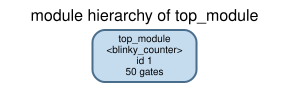
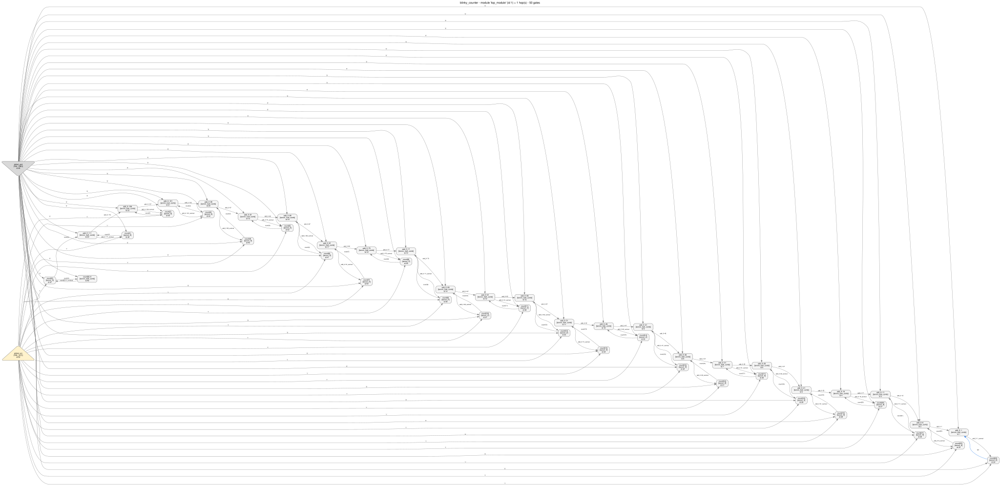
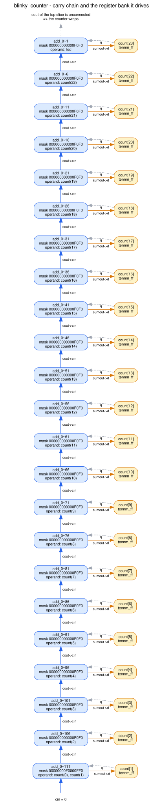
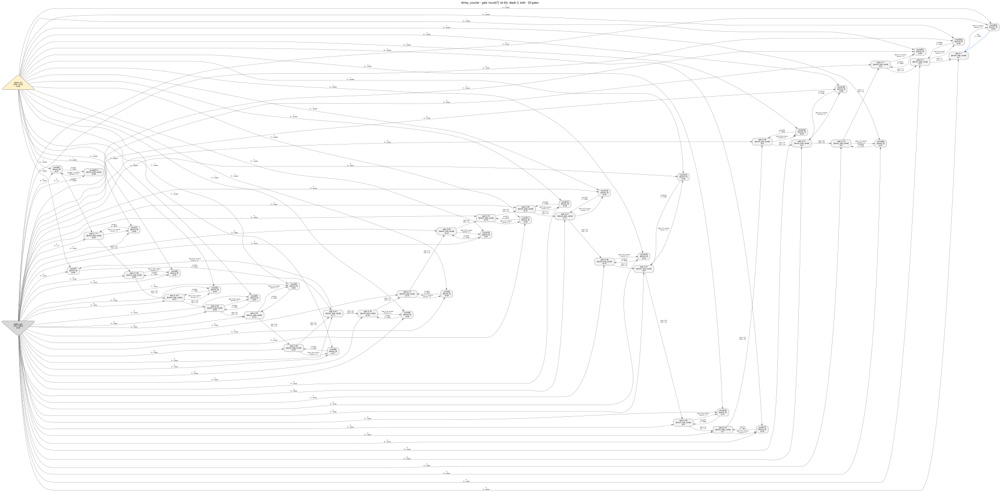

Reverse engineering an Agilex 3 netlist, walkthrough 01: blinky_counter
A 24-bit free-running counter, synthesized for real by Quartus Prime Pro 26.1, taken apart with headless HAL until the RTL comes back. Everything here — the netlist, the commands, the numbers, the pictures — was produced by actually running the flow; nothing is illustrative.
1. The design we are going to lose
The whole exercise only means something if you know the answer in advance. Here is the RTL that was handed to Quartus. Twenty lines, one register, one output.
module blinky_counter (
input wire clk,
input wire rst_n,
output wire led
);
reg [23:0] count;
always @(posedge clk or negedge rst_n) begin
if (!rst_n) begin
count <= 24'd0;
end else begin
count <= count + 24'd1;
end
end
assign led = count[23];
endmoduleFull commented source: design.v. Intended
behaviour, written before synthesis: spec.md.
Three properties make it a good first target, and all three survive into much larger designs:
- It is state, not logic. The register is driven by a function of itself. That feedback is what a netlist analysis can find without understanding anything.
- The
+ 1is not an adder. On an FPGA it becomes a chain of ALM cells connected through a dedicated carry wire. Recognising carry chains is most of what "finding arithmetic in a netlist" means in practice. - Almost nothing is observable. One output bit, 24 bits of state. A black-box observer would wait 8.4 million cycles to see a single transition, so the recovery has to be structural.
The design deliberately avoids PLLs, RAM, DSP and I/O buffers, so the post-synthesis netlist
contains only primitives that AGILEX_TENNM.hgl models. That is not a general
property of Agilex netlists — it is a choice made so that walkthrough 01 has no unmodelled
gates to apologise for.
2. Synthesis and export: the exact commands
This is the same flow the fixtures in tools/hal_agilex/ use, and it is
reproducible from a Quartus Pro installation. Nothing was done by hand in a GUI.
The project is three files. The settings:
# quartus/blinky_counter.qsf
set_global_assignment -name FAMILY "Agilex 3"
set_global_assignment -name DEVICE A3CW135BM16AE6S
set_global_assignment -name TOP_LEVEL_ENTITY blinky_counter
set_global_assignment -name VERILOG_FILE blinky_counter.v
set_global_assignment -name PROJECT_OUTPUT_DIRECTORY output_filesThen, in a scratch directory containing design.v copied to
blinky_counter.v:
quartus_sh -t build.tcl
quartus_syn blinky_counter -c blinky_counter
quartus_eda --simulation --format=verilog --tool=questasim \
--output_directory=simulation blinky_counter -c blinky_counterTwo things about this flow are load-bearing:
- We stop after
quartus_syn. No fitting means no placement, no routing and — the reason it matters here — no I/O buffers. A post-fit export would containtennm_io_ibuf/tennm_io_obufinstances thathal_agilexdeliberately does not model. quartus_edais the export. Quartus Pro 26.1 has no VQM writer for these families; the EDA netlist writer's Verilog output (.vo) is what you get, and it is a genuine structural netlist of ALM cells.
What Quartus reports it built:
Synthesis Status : Successful
Top-level Entity Name : blinky_counter
Family : Agilex 3
Device : A3CW135BM16AE6S
Logic utilization estimate (in ALMs) : 14 / 45,800 ( < 1 % )
Total dedicated logic registers : 24Kept as artifacts/quartus_syn.summary.
Note "14 ALMs" for 24 combinational cells: two ALM halves share a physical ALM. The
netlist counts cells, the report counts silicon.
From .vo to something HAL can parse
HAL's Verilog parser is a structural netlist reader. Three things Quartus writes are outside
what it accepts, so tools/hal_agilex rewrites them — exactly, or it refuses:
in the .vo | what the rewrite does | why it is exact |
|---|---|---|
tri1 devclrn; | becomes wire devclrn; assign devclrn = 1'b1; |
a tri1 with no driver is a constant 1 |
.datac(~count[7]) | the inversion is folded into lut_mask:
mask bit j moves to j XOR (1 << i) |
relabelling a truth table's rows is not an approximation. An inversion on cin,
sharein or a flip-flop pin is refused, because there it would change
meaning |
.combout(), assign unknown = 1'bx; |
dropped | an unconnected output pin and a literal nothing reads |
python tools/hal_agilex import \
examples/agilex3_walkthroughs/01_blinky_counter/blinky_counter.vo \
-o examples/agilex3_walkthroughs/01_blinky_counter/netlist.hal.vYou can watch the mask rewrite happen on one line. Quartus wrote, for the cell that computes bit 2 of the next count:
tennm_lcell_comb #(.lut_mask (64'h0000000000000F0F)) \add_0~106 (
.datac(~count[2]), .cin(\add_0~112 ), .sumout(\add_0~106_sumout ), .cout(\add_0~107 ));and the import produced
tennm_lcell_comb #(.lut_mask (64'h000000000000F0F0)) \add_0~106 (
.datac(count[2]), .cin(\add_0~112 ), .sumout(\add_0~106_sumout ), .cout(\add_0~107 ));The inversion moved out of the wire and into the mask: 0x0F0F with
datac inverted is the same function as 0xF0F0 with datac
straight. Both files are committed here so you can diff them yourself.
hal_agilex inventory enumerates every instance and every pin configuration, and
reports anything outside the validated coverage instead of importing it quietly. For this
export it returns proven_under_assumptions: 24 tennm_ff and 24
tennm_lcell_comb, all in modelled configurations, nothing unsupported.
(artifacts/hal_agilex_inventory.json)
3. First contact with the netlist
Load it. From here on nothing looks at design.v — that file exists only so
that section 5 can tell you how well you did.
export HAL_BASE_PATH=/work/build HAL_PY_PATH=/work/build/lib PYTHONPATH=/work/build/lib
python3 tools/hal_viz module_tree \
examples/agilex3_walkthroughs/01_blinky_counter/netlist.hal.v \
-g plugins/gate_libraries/definitions/AGILEX_TENNM.hgl \
-o examples/agilex3_walkthroughs/01_blinky_counter/images/module_tree.svg
Now the gates themselves.
python3 tools/hal_viz netlist_graph \
examples/agilex3_walkthroughs/01_blinky_counter/netlist.hal.v \
-g plugins/gate_libraries/definitions/AGILEX_TENNM.hgl \
--module top_module --show-boundary \
-o examples/agilex3_walkthroughs/01_blinky_counter/images/netlist_graph.svg
What the netlist actually tells you, for free
python3 examples/agilex3_walkthroughs/01_blinky_counter/analysis.py stats{
"design_name": "blinky_counter",
"gates": 50,
"gate_types": {
"HAL_GND": 1,
"HAL_VCC": 1,
"tennm_ff": 24,
"tennm_lcell_comb": 24
},
"global_inputs": [ "clk", "rst_n" ],
"global_outputs": [ "led" ],
"modules": 1,
"nets": 74,
"top_module": "top_module"
}Read it as an inventory of what you have and what you do not:
| you can see | you cannot see |
|---|---|
|
|
HAL_GND and HAL_VCC do not exist on the device. HAL's Verilog parser
needs a gate to materialise the 1'b0/1'b1 literals the export uses,
so AGILEX_TENNM.hgl declares two with a deliberately un-vendor-like prefix. When
you count gates, remember that two of them are bookkeeping.
One more free fact worth its own line: the count of flip-flops is a hard upper bound on the state. A 24-flip-flop netlist cannot be hiding a 32-bit counter. That kind of arithmetic — the netlist as a budget — is often the fastest way to reject a hypothesis.
4. The reverse-engineering walk, step by step
Seven steps. Each one is a command, the output it produced, and the reasoning that turns that output into a claim. Two of the steps are tools that did not answer the question, which is at least as instructive as the ones that did.
Everything comes from one script,
analysis.py, with one function per step. It reads the
netlist and the gate library and nothing else.
1 Sort the flip-flops by what controls them
python3 examples/agilex3_walkthroughs/01_blinky_counter/analysis.py registers{
"flip_flops": 24,
"groups": [
{
"clk": "clk",
"clrn": "rst_n",
"ena": "'1'",
"members": [
"count[0]",
"count[10]",
"count[11]",
[... 20 more members, lexicographic order: "count[12]" .. "count[8]" ...]
"count[9]"
],
"size": 24
}
]
}Read the three control nets, too.
clk reaches every clk pin and
nothing else, which is what a clock looks like. rst_n reaches every
clrn pin and nothing else, which is what a reset looks like — and because
clrn is the primitive's asynchronous active-low clear, the reset polarity
and the reset value (0) come for free from the gate library, not from a guess. And
ena is tied to the constant 1 on all 24: there is no enable in this
design. If you had gone looking for a "start" or "valid" signal, you would have found
nothing, and that absence is a real fact about the circuit.
2 Find the feedback loops (strongly connected components)
python3 examples/agilex3_walkthroughs/01_blinky_counter/analysis.py scc{
"components": [
{
"gate_types": {
"tennm_ff": 1,
"tennm_lcell_comb": 1
},
"gates": [
"count[0]",
"count[0]~0"
],
"size": 2
},
{
"gate_types": {
"tennm_ff": 1,
"tennm_lcell_comb": 1
},
"gates": [
"add_0~111",
"count[1]"
],
"size": 2
},
[... 22 more components, all identical in shape: one tennm_ff with its one
tennm_lcell_comb, size 2 — {add_0~106, count[2]} .. {add_0~1, count[23]} ...]
],
"edges": 456,
"min_size": 2,
"vertices": 50
}graph_algorithm builds the gate graph and asks igraph for its strongly connected
components. Any component with more than one vertex is a feedback loop. Here there are
exactly 24, and every one of them is a single flip-flop with its single ALM:
the register's q into the cell, the cell's sumout back to the
register's d. State lives in 24 places, one per bit.
What the components alone can not tell you is whether those 24 slices are 24 independent toggle flops or one 24-bit machine. From the SCC view the two look identical, because a ripple-carry counter's only coupling between bits is the carry chain, and the carry chain flows strictly upward — bit i feeds bit i+1 and never comes back. It is acyclic, so a cycle search cannot see it. That question is answered by the next two steps: DANA's grouping of the registers, and the chain itself.
The contrast is what makes the step worth running. When the feedback does span the word — an LFSR, a CRC, a scrambler, where taps from several bits are folded back into one — the picture changes completely: the whole register collapses into one big component. So "one big SCC versus many bit-sized SCCs" is the first fork in the road: a word-level feedback machine on one side, a counter-like or pipeline-like structure on the other.
3 Ask DANA to group the registers for you
HAL ships dataflow_analysis (DANA), a heuristic that groups flip-flops into
word-level registers from their input and output dataflow. It is the tool you would reach for
on a real design, so run it here even though step 1 already answered the question.
python3 tools/hal_viz dataflow \
examples/agilex3_walkthroughs/01_blinky_counter/netlist.hal.v \
-g plugins/gate_libraries/definitions/AGILEX_TENNM.hgl \
-o examples/agilex3_walkthroughs/01_blinky_counter/images/dataflow[hal_viz] running DANA dataflow analysis (this can take a while) ...
[hal_viz] dataflow analysis recovered 1 register group(s)
ID:0, Size:24, CLK: {7}, EN: {2}, R: {8}, S: {}
Successors: {0}
Predecessors: {0}
count[23], type: tennm_ff, id: 24
count[22], type: tennm_ff, id: 25
count[21], type: tennm_ff, id: 26
[... all 24 bits of count, one line each ...]
count[0], type: tennm_ff, id: 474 Follow the carry chain
Twenty-three of the 24 combinational cells in those loops are not wired like ordinary logic.
On an Altera ALM the carry between adjacent cells is a dedicated connection: a net
that leaves a tennm_lcell_comb.cout and enters another cell's cin can
be nothing else. So the chain can be recovered exactly, with no heuristic at all — walk the
cout → cin links.
python3 examples/agilex3_walkthroughs/01_blinky_counter/analysis.py chain{
"chains": [
{
"length": 23,
"slices": [
{
"cell": "add_0~111",
"data_inputs": {
"datac": "count(1)",
"datad": "count(0)"
},
"lut_mask": "00000000F0000FF0",
"position": 0,
"sumout": "add_0~111_sumout",
"sumout_sink": [
"count[1].d"
]
},
{
"cell": "add_0~106",
"data_inputs": {
"datac": "count(2)"
},
"lut_mask": "000000000000F0F0",
"position": 1,
"sumout": "add_0~106_sumout",
"sumout_sink": [
"count[2].d"
]
},
[... 21 more slices, positions 2..22, every one identical in shape to position 1:
a single datac operand, mask 000000000000F0F0, sumout feeding count[3].d ..
count[23].d. The last one, add_0~1 at position 22, takes its operand from the
net named led — which is count[23]'s own q ...]
]
}
]
}
q coming back down
(dashed) as the slice's operand. Generated by
analysis.py --dot … and rendered with dot -Tsvg.sumout goes to exactly one flip-flop's
d pin. That is the shape of an n-bit arithmetic unit whose result is
registered — and since step 2 showed the registers feed back into the same cells, the operand
of the arithmetic is the register itself.
Note the arithmetic: 23 chain cells but 24 flip-flops. One register is not on the chain. Finding it, and finding out what drives it instead, is the next step and it is where the increment finally becomes visible.
The chain also gives you something names never would: an order. Carry flows from least significant to most significant, so the position of a slice in the chain is the bit index of the register it feeds. Bit order is a wiring property here, not a naming convention.
5 Read the increment out of the masks
Each cell's function is in its lut_mask parameter. In arithmetic mode the
64-bit mask is used as two 4-input halves:
f0 = lut_mask[ dataa + 2*datab + 4*datac + 8*datad ] (bits 0..15)
f1 = lut_mask[ 16 + dataa + 2*datab + 4*datac + 8*datad ] (bits 16..31)
sumout = f0 XOR cin
cout = (f0 AND cin) OR (NOT f0 AND f1)That is the propagate/generate form of a carry chain, and it is not folklore: Quartus prints
it next to every arithmetic instance in the .vo as an // Equation(s):
comment. hal_agilex implements exactly that decoding and attaches the resulting
Boolean functions to each gate with Gate.add_boolean_function, because a
ten-input, three-output cell cannot carry a lut_config in the gate library.
python3 examples/agilex3_walkthroughs/01_blinky_counter/analysis.py increment{
"cells": [
[... 2 earlier cells: add_0~101, identical to add_0~106 below, and the top slice
add_0~1, identical except that it has no cout — nothing consumes it ...]
{
"cell": "add_0~106",
"constant_inputs": { [... dataa, datab, datad, datae, dataf: all 0 ...] },
"functions": {
"cout": "(cin & datac)",
"sumout": "((cin | datac) & ((! cin) | (! datac)))"
},
"lut_mask": "000000000000F0F0",
"mode": "arithmetic",
"signal_inputs": {
"cin": "add_0~112",
"datac": "count(2)"
}
},
[... add_0~11, another middle slice ...]
{
"cell": "add_0~111",
"constant_inputs": { [... cin, dataa, datab, datae, dataf: all 0 ...] },
"functions": {
"cout": "((datac & datad) | (cin & (datac | datad)))",
"sumout": "((cin & ((datac & datad) | ((! datac) & (! datad)))) | ((! cin) & ((datac | datad) & ((! datac) | (! datad)))))"
},
"lut_mask": "00000000F0000FF0",
"mode": "arithmetic",
"signal_inputs": {
"datac": "count(1)",
"datad": "count(0)"
}
},
[... 18 more arithmetic slices, add_0~16 .. add_0~96, all identical in shape to
add_0~106: one datac operand, mask 000000000000F0F0 ...]
{
"cell": "count[0]~0",
"constant_inputs": { [... cin, datab, datac, datad, datae, dataf: all 0 ...] },
"functions": {
"combout": "(! dataa)"
},
"lut_mask": "5555555555555555",
"mode": "normal",
"signal_inputs": {
"dataa": "count(0)"
}
}
]
}
hal_viz netlist_graph --gate … --depth 2 --pin-labels
--show-boundary.- The 21 cells in the middle of the chain reduce to
sumout = datac ^ cinandcout = datac & cin, withdatacbeing the register's ownqand every other data input tied to 0. A full-adder slice would have had two signal operands; this one has one, so the second addend bit is a constant 0 — and a chain whose addend is 0 everywhere does nothing except propagate a carry. - The bottom cell of the chain is the exception: two signal operands
(
datac,datad), a carry-in tied to 0, and the classicf0 = p ^ q/f1 = p & qpair. It is adding two adjacent counter bits, which is what the bottom of an increment looks like once the "+1" has been folded in. - The top cell of the chain computes the same
sumout = datac ^ cinas the middle ones but has nocoutfunction at all: it drives the most significant bit, and a carry out of the top of a 24-bit increment has nowhere to go, so Quartus never synthesised one. An overflow flag or a wider counter would have consumed it. - The one cell not on the chain at all is in normal mode and computes
combout = !dataafrom a single register'sq— a toggle. That is the least significant bit:bit0_next = !bit0.
r <= r + 1. Had the
middle cells carried a second signal operand, it would have been r <= r + B,
an accumulator; had they carried an inverted operand and a carry-in of 1, a subtractor.
hal_agilex has a carry-chain recogniser. Run it on this netlist:
python3 tools/hal_agilex recognize \
examples/agilex3_walkthroughs/01_blinky_counter/blinky_counter.vohal_agilex/recognize/no-adder | unknown
"1 carry chain(s) were followed and none matched the ripple-carry adder
pattern; this says nothing about what the design computes."
data: {"rejected": ["cell add_0~106 is not an arithmetic slice"]}f0 = p ^ q, f1 = p & q) because it was written against
an accumulator fixture. An increment degenerates to one operand per slice, so the match is
rejected — and note the status is unknown, not refuted: the tool says
"I did not recognise this", not "this is not an adder". That distinction is the whole reason
the findings schema has both words.
The human workaround is exactly what step 5 does: stop asking "is this the adder I know" and start reading the masks. A recogniser is a shortcut for shapes someone has already met; the mask decoding works on every shape.
6 Find the output tap and pin down the bit order
python3 examples/agilex3_walkthroughs/01_blinky_counter/analysis.py output
python3 examples/agilex3_walkthroughs/01_blinky_counter/analysis.py order{
"outputs": [
{
"driven_by": [
"count[23].q"
],
"net": "led"
}
]
}{
"chain_length": 23,
"order": [
{
"chain_position": 0,
"register": "count[1]"
},
{
"chain_position": 1,
"register": "count[2]"
},
[... chain positions 2 .. 21 feed count[3] .. count[22], one per slice ...]
{
"chain_position": 22,
"register": "count[23]"
}
]
}q — no logic in
between, so led is a state bit, not a decoded function of the state.
Which one? Step 4 gave the chain an order, and the order is the bit significance. The register that drives
led hangs off the last slice of the chain, so it is
the most significant bit of the counter. Combined with the 24-bit width from step 2, that is
led = r[23].
Read the ordering table carefully: chain position 0 feeds the register that is bit 1, not bit 0, because the bottom slice consumes two bits at once. Bit 0 is the toggle cell from step 5. Off-by-one errors here are the single easiest way to get a counter recovery wrong.
7 Ask the remaining tools, and take "nothing found" as an answer
Two more analyses in this repository apply to a design like this. Neither of them tells you anything new — and knowing why is part of learning which tool to reach for.
Clock and reset domains
python3 tools/hal_viz clock_tree \
examples/agilex3_walkthroughs/01_blinky_counter/netlist.hal.v \
-g plugins/gate_libraries/definitions/AGILEX_TENNM.hgl \
-o examples/agilex3_walkthroughs/01_blinky_counter/images/clock_tree.svg
python3 tools/hal_cdc discover ... && python3 tools/hal_cdc audit ...domains : clk
registers : 24 (0 with an unknown domain)
crossings : 0
unknown inputs : 0
reset targets : 24
reset_synchronizer_stage 24
NOTE: structural screening only -- no timing, no metastability sign-off.
findings: examples/agilex3_walkthroughs/01_blinky_counter/artifacts/cdc.findings.json
domain graph: examples/agilex3_walkthroughs/01_blinky_counter/images/cdc_domains.dotFinite state machines
tools/hal_fsm drives solve_fsm to recover a transition relation
from a nominated state register. Technically this counter is a finite state machine:
24 state bits, one transition per state, deterministic and total. Do not run it.
r <= r + 1" does not say in nine characters.
FSM solving pays off when the state space is small and irregular — a handshake controller, a protocol sequencer, a bus arbiter. Counters and datapath registers are the wrong input for it, and recognising that before you launch a solver is a skill worth having. The structural route taken in steps 1–6 scales to a 64-bit counter without breaking a sweat; the FSM route does not survive 32.
5. Reconstruction, and an honest diff
Everything above adds up to a design. Written out, with names invented where the netlist has none to give:
module recovered_top (
input wire clk,
input wire rst_n,
output wire led
);
reg [23:0] r;
always @(posedge clk or negedge rst_n) begin
if (!rst_n) begin
r <= 24'd0;
end else begin
r <= r + 24'd1;
end
end
assign led = r[23];
endmoduleCommitted, with a comment on every recovered fact, as
recovered.v.
Does it actually reproduce the netlist?
Do not take the reconstruction on faith. hal_agilex behavior simulates the
exported netlist with the validated primitive semantics and compares it, cycle by
cycle, against a Python restatement of the recovered design
(recovered_reference.py).
python3 tools/hal_agilex behavior \
examples/agilex3_walkthroughs/01_blinky_counter/blinky_counter.vo \
--reference examples/agilex3_walkthroughs/01_blinky_counter/recovered_reference.py \
--cycles 1200 -o .../artifacts/hal_agilex_behavior.jsonproven_bounded | 1200 pseudo-random cycles, including asynchronous clears,
agree with the reference model. Nothing is claimed beyond that bound.- Wrong increment (
+ 2instead of+ 1) —bounded_counterexampleat cycle 1:expected {'led': 0, 'count': 2}, got {'led': 0, 'count': 1}. Caught immediately. (artifact) - Wrong width (23 bits instead of 24) —
proven_bounded, i.e. not caught. Over 1200 cycles the counter never leaves the bottom 11 bits, so nothing above bit 10 is exercised and a wrong top-bit index is invisible. (artifact)
led. Those two facts rest entirely on the structural steps: the count of
stateful bit slices and the length of the carry chain. This is the normal division of
labour in netlist RE, and it is worth internalising: simulation checks the parts of a
hypothesis that the reachable state space actually reaches; structure carries the rest.
The reference model reads the export's declared 24-bit bus as well as
led, so all 24 state bits are compared each cycle. Even so, the bits that never
move cannot be checked. Comparing only led would have been weaker still: it is 0
in both models for the entire run.
What was recovered, and what was lost
property of design.v | outcome | why |
|---|---|---|
port list clk, rst_n, led |
recovered exactly, names included | port names survive synthesis; they are in the .vo module header |
| register width 24 | recovered exactly | 24 stateful bit slices (one SCC per bit), joined by 23 chain slices + 1 LSB cell |
| asynchronous, active-low reset to 0 | recovered exactly | clrn is an asynchronous clear pin of the primitive; the polarity and
the value 0 are properties of the cell, not guesses |
| increment by 1, free-running | recovered exactly | carry chain with no second operand, carry-in 0, LSB inverted; every ena tied
to 1 |
| wrap-around at 224 | recovered exactly | the top slice's cout drives nothing |
| bit order (which flip-flop is bit 0) | recovered exactly | from the carry-chain order — a wiring property, independent of names |
led = count[23] | recovered exactly | the only global output is driven by the q of the register at the top of the
chain |
the name count | not recoverable in principle | Quartus happened to keep it (count[7], add_0~81), and this
walkthrough deliberately never used it. Strip the names and every conclusion above still
holds |
| module hierarchy | lost (nothing to lose here) | synthesis flattens; the design was already flat |
| "it is a blinky, at ~3 Hz on a 50 MHz clock" | not in the netlist | the clock frequency is a board fact. The netlist knows the counter divides by 224; what that means in seconds is context you have to supply |
coding style (count + 1 vs. a toggle-flop chain) | lost | both would synthesise to a carry chain; the netlist cannot distinguish source forms that compile to the same circuit |
| power-up value | not modelled | the export says power_up = "dont_care". hal_agilex starts
registers at 0 for simulation and says so; that is an assumption, not a recovery |
recovered.v and design.v are
the same circuit. Every identifier that carries meaning is gone or was never in the
netlist. That asymmetry — perfect structure, zero semantics — is what netlist reverse
engineering is, and it is why the hard part of a real job is not recovering the circuit but
deciding what it is for.
6. Going further
Re-run everything
# the whole toolchain, in the order this guide uses it
HAL_BASE_PATH=<build> HAL_PY_PATH=<build>/lib PYTHONPATH=<build>/lib \
sh examples/agilex3_walkthroughs/01_blinky_counter/run_analyses.sh
# just the assertions, for CI
python3 examples/agilex3_walkthroughs/01_blinky_counter/check.pycheck.py re-derives every load-bearing claim in this
guide and exits non-zero if any of them stops holding — a HAL change, a plugin change or a
regenerated netlist will be caught rather than quietly invalidating the text.
Exercises that teach more than reading
- Strip the names. Rewrite
netlist.hal.vwith every gate and net renamed tog1,n17, … and re-runanalysis.py all. Nothing in the walk should change. If something does, that step was leaning on a name. - Change the width and re-synthesise. Make the counter 12 or 40 bits and watch the number of bit-slice components and the chain length move with it. Then check whether the LSB is still a separate normal-mode cell, or whether Quartus packs it differently.
- Add an enable.
if (en) count <= count + 1;— doesenland ontennm_ff.ena, or does Quartus build a feedback multiplexer in the LUTs instead? Both happen in practice, and they look completely different in the netlist. - Make it a down-counter. The carry chain stays, the masks change. Read the
new masks with
analysis.py incrementand work out the borrow. - Break the tools on purpose. Replace the increment with
count + addendand watchhal_agilex recognizeflip fromunknownto a recognised ripple-carry adder — the same tool, the same netlist shape, a different answer, because now each slice really does have two operands.
Where to look in this repository
| path | what it is for |
|---|---|
tools/hal_agilex/ | the Agilex primitive semantics, the
.vo reader/importer and the validated coverage list |
tools/hal_viz/ | every picture in this guide |
tools/hal_explain/ | composes findings from several analyses into a block model with evidence links — the next step up from a single walkthrough |
tools/hal_fsm/, tools/hal_cdc/ | the tools that were not the right ones here; they are the right ones for control logic and multi-clock designs |
plugins/dataflow_analysis/ | DANA, the register-grouping heuristic |
plugins/graph_algorithm/ | the igraph bridge behind the SCC step |
.claude/skills/using-hal/ | how to drive headless HAL in general |
Every image in this guide was generated by the commands shown, from the netlist committed next
to it. The .dot source of each diagram sits beside its .svg in
images/; the JSON behind every quoted output is in artifacts/.